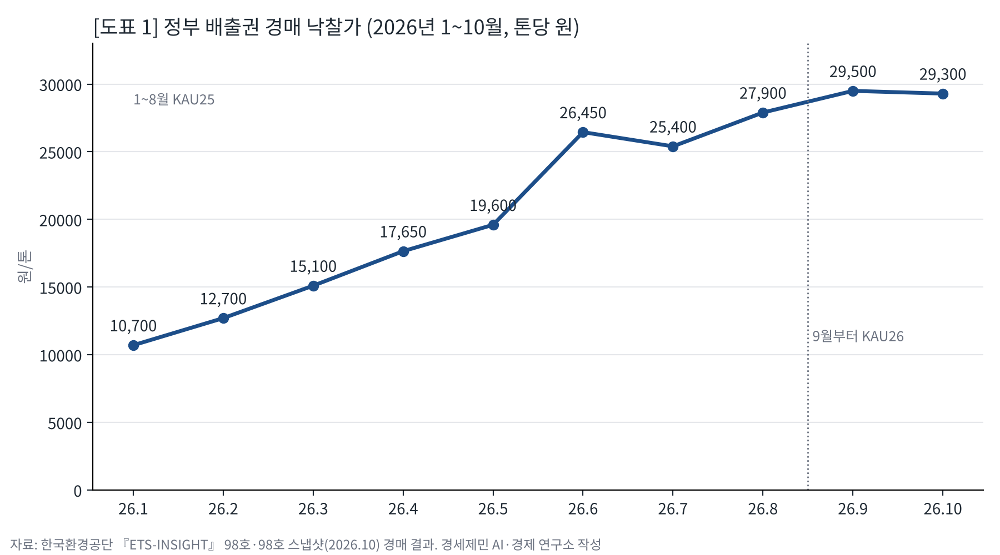
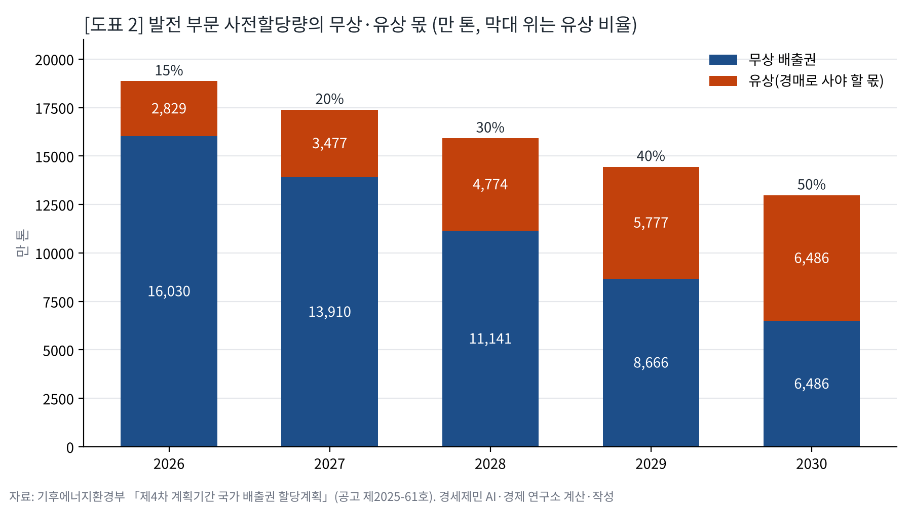
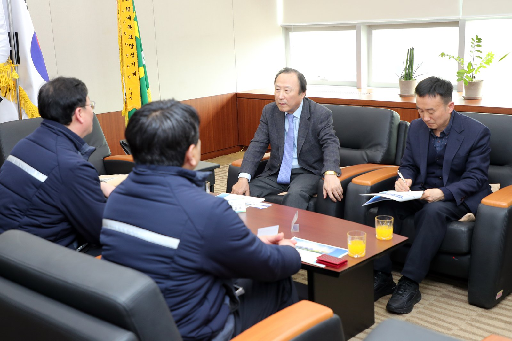
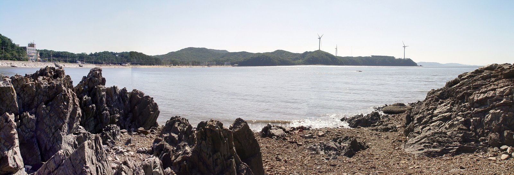
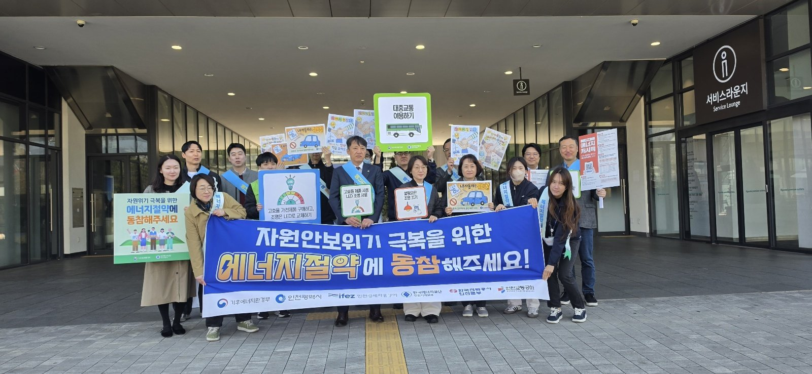

[기후위기] 탄소값 세 배 가까이, 영흥화력 청구서는 누가 받나
배출권 경매가 1만700원에서 2만9300원으로
발전 무상 배출권, 2030년까지 60% 준다
영흥 몫 5년 1조4600억원, 연구소가 셌다
온실가스 배출권 값이 한 해 사이 세 배 가까이 올랐다. 정부 경매 낙찰가는 2026년 1월 톤당 1만700원에서 10월 2만9300원이 됐다. 발전사가 공짜로 받는 배출권은 해마다 줄고, 돈을 내고 사야 할 몫은 해마다 는다. 그 값이 인천 영흥화력에 얼마로 떨어지고 전기요금 고지서에 어떻게 닿는지 사실로 짚는다.
경매 낙찰가, 열 달 사이 2.7배
배출권은 온실가스 1톤을 내보낼 권리다. 정부는 기업에 나눠 줄 몫 가운데 일부를 떼어 달마다 경매로 판다. 한국환경공단이 내는 『ETS-INSIGHT』에 그 경매 결과 원표가 실린다.
1월 14일 낙찰가는 톤당 1만700원이었다. 2월 1만2700원, 3월 1만5100원, 4월 1만7650원, 5월 1만9600원으로 달마다 올랐다.
6월 2만6450원으로 뛰었고 7월 2만5400원으로 한 번 물러섰다. 8월 2만7900원, 9월 2만9500원으로 다시 올랐다.
8월까지는 제3차 계획기간 마지막 해 몫(KAU25)을, 9월부터는 2026년 몫(KAU26)을 팔았다.
10월 14일 경매에는 283만톤이 나왔다. 23개 업체가 321만2100톤을 써냈고 20개 업체가 264만5400톤을 사 갔다. 낙찰가는 2만9300원으로 1월의 2.74배다.
장내 시장 값도 3만원 안팎으로, 10월 15일 종가는 3만200원이었다.
값이 너무 뛰면 막는 장치도 생겼다. 정부는 2026년 4월 시행령을 고쳐 시장안정화예비분 약 8500만톤을 뒀다. 경매가가 정한 범위 상단을 넘으면 경매 물량을 늘린다.

제4차 거래제, 발전사 몫이 바뀌었다
기후에너지환경부는 2025년 11월 14일 「제4차 계획기간 국가 배출권 할당계획」을 공고했다. 11월 11일 국무회의 의결을 거친 계획이다. 기간은 2026년부터 2030년까지 다섯 해다.
배출허용총량은 25억3730만톤이다. 기업에 미리 나눠 주는 사전할당량이 23억6298만톤이다. 이 가운데 발전 부문이 7억9575만톤이다. 기후부는 12월 29일자로 772개 업체에 할당을 마쳤다.
바뀐 것은 유상할당, 곧 할당량 가운데 정부가 떼어 경매로 파는 몫이다.
발전 부문 유상 비율은 2026년 15%에서 2027년 20%, 2028년 30%, 2029년 40%, 2030년 50%로 오른다. 발전 외 부문은 15%에 머문다. 탄소누출 우려업종과 특례업종은 0%다.
떼어 낸 배출권은 정부 유상할당 계정으로 옮겨 경매로 공급한다. 발전사는 무상으로 받은 몫보다 많이 내보내면 경매나 장내 시장에서 사서 채운다.
기후부는 할당과 함께 제3차 계획기간 전환 부문에 과잉할당된 2395만톤을 거둬들인다고 밝혔다.
무상은 60% 줄고, 유상은 2.3배
할당계획 원문에는 발전 부문 연도별 사전할당량 표가 있다. 2026년 1억8859만톤에서 2030년 1억2971만톤으로 31% 준다.
연구소는 이 표에 연도별 유상 비율을 곱했다. 발전사가 경매로 사야 할 몫은 2026년 2829만톤에서 2030년 6485만톤으로 2.3배가 된다.
무상으로 받는 몫은 거꾸로 간다. 2026년 1억6030만톤에서 2030년 6485만톤으로 60% 준다. 2030년에는 무상과 유상이 같아진다.
값은 10월 경매 낙찰가 2만9300원에 묶어 두고 곱했다. 발전 부문 유상 몫은 2026년 8289억원, 2030년 1조9002억원이다. 다섯 해를 더하면 6조8397억원이다.
이 수는 전망이 아니고, 공고된 할당량과 비율에 한 차례 경매가를 곱한 값이다.
값이 1월 수준인 1만700원이면 2026년 몫은 3027억원으로 내려간다. 값이 톤당 1만원 오르내릴 때마다 다섯 해 합계는 2조3344억원씩 움직인다.

영흥화력 1~6호기, 다섯 해 1조4646억원
인천시가 2024년 4월 낸 「탄소중립·녹색성장 기본계획」은 2018년 인천 배출량을 발전 포함 6624만톤으로 적었다. 발전을 빼면 2704만톤이다. 인천 배출의 59%가 발전에서 나온다.
같은 계획은 영흥 1~6호기를 수소 전소로 바꾸면 연간 3225만톤이 준다고 적었다. 2018년 인천 배출량의 49%에 이르는 양이다.
연구소는 이 3225만톤에 발전 부문 유상 비율과 10월 경매가를 곱했다. 영흥의 몫은 2026년 1417억원, 2028년 2835억원, 2030년 4725억원이다. 다섯 해를 더하면 1조4646억원이다.
기준을 밝혀 둔다. 유상 몫은 배출량이 아니라 할당량에 걸린다. 영흥의 사업장별 할당량은 공개되지 않아 인천시 계획이 적은 배출 규모를 썼다.
3225만톤은 2026년 발전 부문 사전할당량의 17%다.
실제 할당량과 배출량이 이보다 적으면 청구서도 그만큼 준다. 인천시 계획은 영흥 3~6호기 LNG 혼소로 2030년까지 연간 438만톤을 줄인다고 적었다.
같은 계획에는 조기 전환 시나리오도 있다. 1·2호기는 2030년 LNG 전환, 3·4호기는 2035년, 5·6호기는 2040년 폐쇄다. 내구연한보다 3~4년 이르다.


인천이 만들고 전국이 같은 단가로 낸다
인천은 쓰는 것보다 많은 전기를 만든다.
전력통계정보시스템을 보면 2025년 인천 발전량은 4549만MWh, 판매량은 2634만MWh다. 쓰는 전기의 1.73배를 만든다.
전기요금 고지서의 기후환경요금에는 배출권거래제 이행비용 항목이 있다. 에너지경제연구원 『에너지 브리프』를 보면 이 항목은 두 번 올랐다. 2022년 4월과 2023년 1월, kWh당 0.3원씩이다.
기후환경요금은 1kWh마다 같은 단가로 붙어, 발전소가 선 인천의 가정도 발전소가 없는 지역의 가정도 같은 값을 낸다.
크기를 가늠해 본다. 발전 부문 유상 몫을 2025년 전국 판매량 5억4942만MWh로 나눴다. kWh당 2026년 1.51원, 2030년 3.46원이다. 한 달 300kWh를 쓰는 집으로 치면 453원과 1038원에 해당하는 크기다.
배출 비용이 누구에게 가는지는 연구가 있다. 파브라와 레관트는 2014년 『아메리칸 이코노믹 리뷰』 논문에서 스페인 도매전력시장을 들여다봤다. 배출 비용의 77~86%가 전기값에 옮겨졌고, 첨두 시간에는 100%에 이르렀다.
두 연구자는 무상할당을 받은 발전사가 전기값 상승으로 횡재 이익을 얻었다고 분석했다. 비용은 소비자에게서 생산자로 옮겨 간다고 진단했다.
유럽연합 집행위원회는 2013년부터 발전사가 발전에 필요한 배출권을 모두 사야 한다고 밝힌다. 9월 30일 유럽연합 경매 낙찰가는 84.41유로, 13만16원이었다. 같은 달 한국 경매가는 그 23%다.
콜머 등은 2025년 『리뷰 오브 이코노믹 스터디스』 논문에서 프랑스 제조업 자료로 유럽 배출권거래제를 따졌다. 규제 기업 배출은 14~16% 줄었고, 생산과 고용이 줄었다는 증거는 찾지 못했다.

다음 경매는 11월 11일, 283만톤이다. 기후부는 9월 18일 제12차 전력수급기본계획을 위한 「2040년 석탄발전 조기폐지 방안」 토론회를 열었다. 2027년 발전 유상 비율은 20%로 오른다. 영흥의 몫은 같은 값에서 1890억원이 된다. 석탄이 언제 멈추느냐가 청구서의 크기를 정한다.
참고문헌
- Fabra, N., & Reguant, M. (2014). Pass-Through of Emissions Costs in Electricity Markets. American Economic Review, 104(9), 2872–2899. (NBER Working Paper 19613 판으로 읽음) https://www.nber.org/papers/w19613
- Colmer, J., Martin, R., Muûls, M., & Wagner, U. J. (2025). Does Pricing Carbon Mitigate Climate Change? Firm-Level Evidence from the European Union Emissions Trading System. Review of Economic Studies, 92(3), 1625–1660. (벨기에국립은행 Working Paper 438 판으로 읽음) https://www.nbb.be/doc/ts/publications/wp/wp438en.pdf
- 에너지경제연구원, 『에너지 브리프』 2023년 10월호(Series No. 10-10), 2023.10. https://kesis.keei.re.kr/pdfOpen.es?bid=0019&list_no=569&seq=3
- 인천광역시, 『인천광역시 탄소중립·녹색성장 기본계획』, 2024.4. https://www.pcccr.go.kr/storage/board/base/2024/07/10/BOARD_ATTACH_1720569892998.pdf
- 한국환경공단, 『ETS-INSIGHT(배출권거래제&탄소시장 정보지)』 98호, 2026.10.(10.16 수정) https://www.keco.or.kr/web/lay1/bbs/S1T164C1417/A/275/view.do?article_seq=100749
- 한국환경공단, 『ETS-INSIGHT』 98호 스냅샷, 2026.10.20. https://www.keco.or.kr/web/lay1/bbs/S1T164C1417/A/275/view.do?article_seq=100786
- 기후에너지환경부, 「온실가스 배출권거래제 제4차 계획기간 국가 배출권 할당계획」(기후에너지환경부공고 제2025-61호), 2025.11.14. https://www.mcee.go.kr/home/web/board/read.do?menuId=10524&boardMasterId=39&boardCategoryId=55&boardId=1819470
- 기후에너지환경부, 「온실가스 배출권거래제 제4차 계획기간(2026~2030) 배출권 할당 완료」 보도자료, 2025.12.26. https://eiec.kdi.re.kr/policy/materialView.do?num=275409
- 기후에너지환경부, 「제12차 전기본 수립을 위한 2040년 석탄발전 조기폐지 방안 정책토론회(7차) 개최」 보도자료, 2026.9.9. https://eiec.kdi.re.kr/policy/materialView.do?num=286547
- 전력거래소 전력통계정보시스템, 「지역별 발전량」·「시도별 용도별 판매전력량」(2025년, 출처 한국전력통계). https://epsis.kpx.or.kr
- European Commission, "Free allocation", EU Emissions Trading System. https://climate.ec.europa.eu/eu-action/carbon-markets/eu-emissions-trading-system-eu-ets/free-allocation_en
사진·도표 출처
- [사진1] 인천광역시 보도자료 「인천시, 영흥발전본부서 '2045 탄소중립' 실행력 점검」(2026.3.27), 공공누리 제1유형(출처표시). https://www.incheon.go.kr/IC010205/view?repSeq=DOM_0000000014416057
- [사진2] Jpbarrass, 「2010-09-23 - Jeonggyeong-ri, Yeongheung Island.jpg」, 위키미디어 공용, 퍼블릭 도메인(저작자 공개). https://commons.wikimedia.org/wiki/File:2010-09-23_-_Jeonggyeong-ri,_Yeongheung_Island.jpg
- [사진3] 인천광역시 보도자료 「“에너지 절약 함께해요” 인천시 에너지 위기 대응 거리캠페인 전개」(2026.4.8), 공공누리 제1유형(출처표시). https://www.incheon.go.kr/IC010205/view?repSeq=DOM_0000000014502128
- [도표1] 경세제민 AI·경제 연구소 작성, 자료 한국환경공단 『ETS-INSIGHT』 98호(2026.10)·98호 스냅샷(2026.10.20)
- [도표2] 경세제민 AI·경제 연구소 계산·작성, 자료 기후에너지환경부 「제4차 계획기간 국가 배출권 할당계획」(2025.11.14)
© 경세제민 AI·경제 연구소. 인용할 때는 출처를 밝혀 주십시오.